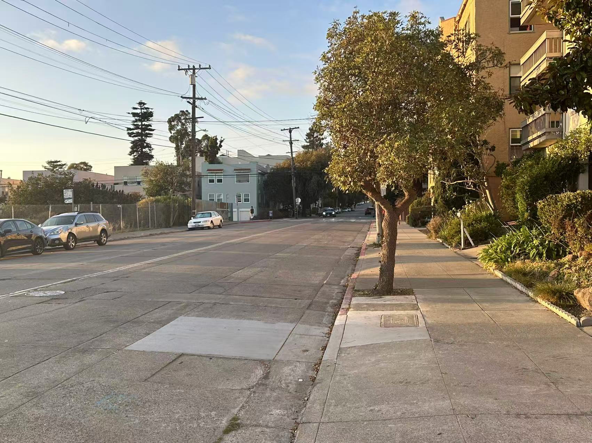
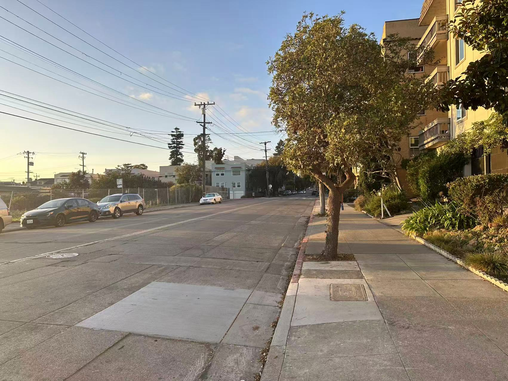
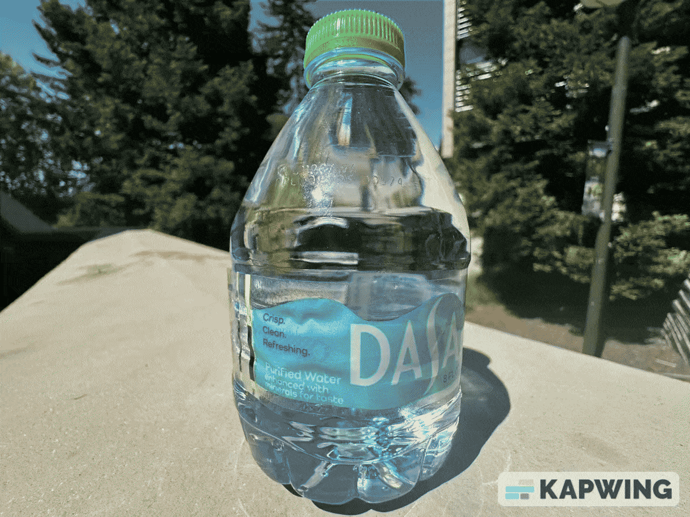
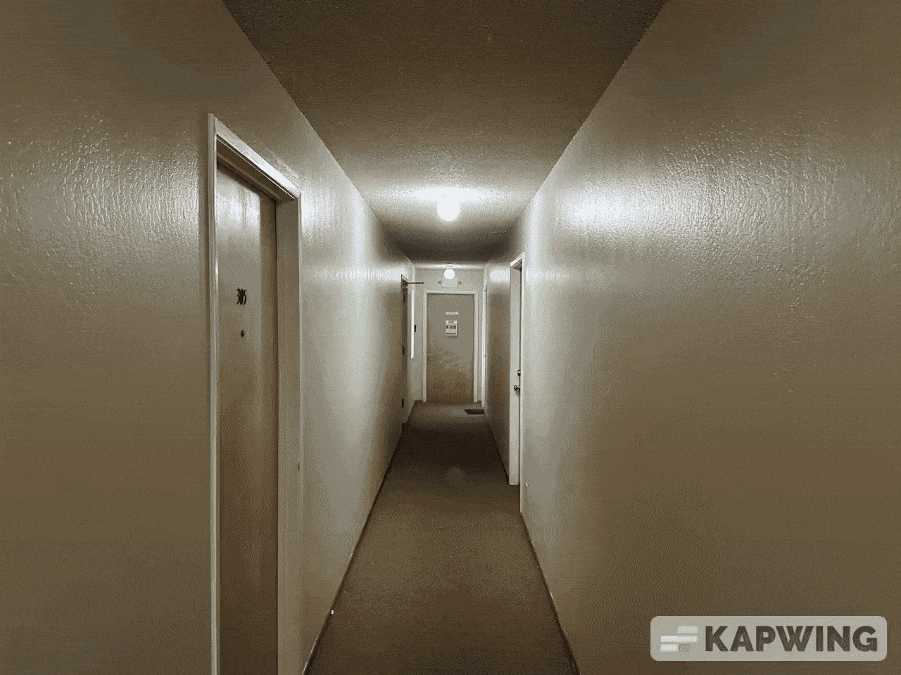

CS180 Project 0
Part 1: Selfie: The Wrong Way vs. The Right Way

The Wrong Way

The Right Way
There is a clear difference in the appearance of the ears between the two photos.
Explanation:
When taking a selfie and holding your phone really close to your face, the wide-angle lens on your phone kind of messes with how your face looks. Since your nose is so much closer to the camera than your ears, your nose ends up looking bigger, and the sides of your face look smaller. This makes your face seem a bit distorted — like your nose is huge and your face looks slimmer than it really is.
If you use the zoom on your phone, or just hold your phone a bit farther away when you take the selfie, the distances between your nose and ears aren't so different from the camera's point of view. That way, your facial features look more balanced and natural in the photo, and you look more like yourself.
When taking a selfie and holding your phone really close to your face, the wide-angle lens on your phone kind of messes with how your face looks. Since your nose is so much closer to the camera than your ears, your nose ends up looking bigger, and the sides of your face look smaller. This makes your face seem a bit distorted — like your nose is huge and your face looks slimmer than it really is.
If you use the zoom on your phone, or just hold your phone a bit farther away when you take the selfie, the distances between your nose and ears aren't so different from the camera's point of view. That way, your facial features look more balanced and natural in the photo, and you look more like yourself.
Part 2: Architectural Perspective Compression

Zoom In

Without Zoom
Explanation:
When using a zoom or telephoto lens from far away to take pictures of buildings or city streets, everything in the shot — whether it's close or far — looks almost the same size. This makes the photo look kind of “flat” or “squished together,” and you don't get much of a feeling of depth. That's because a zoom lens zooms in on distant things, so they look just as big as things in the front.
On the other hand, if you use a wide-angle lens and get up close, the stuff that's near you looks huge, while things farther away look really small. This stretches out the scene and makes the distance between things look bigger, giving your photo a strong sense of depth and space.
When using a zoom or telephoto lens from far away to take pictures of buildings or city streets, everything in the shot — whether it's close or far — looks almost the same size. This makes the photo look kind of “flat” or “squished together,” and you don't get much of a feeling of depth. That's because a zoom lens zooms in on distant things, so they look just as big as things in the front.
On the other hand, if you use a wide-angle lens and get up close, the stuff that's near you looks huge, while things farther away look really small. This stretches out the scene and makes the distance between things look bigger, giving your photo a strong sense of depth and space.
Part 3: The Dolly Zoom

Follow Order

My Favorite (The Backrooms Like)
I have tried my best to control the size of the door in the scene :(